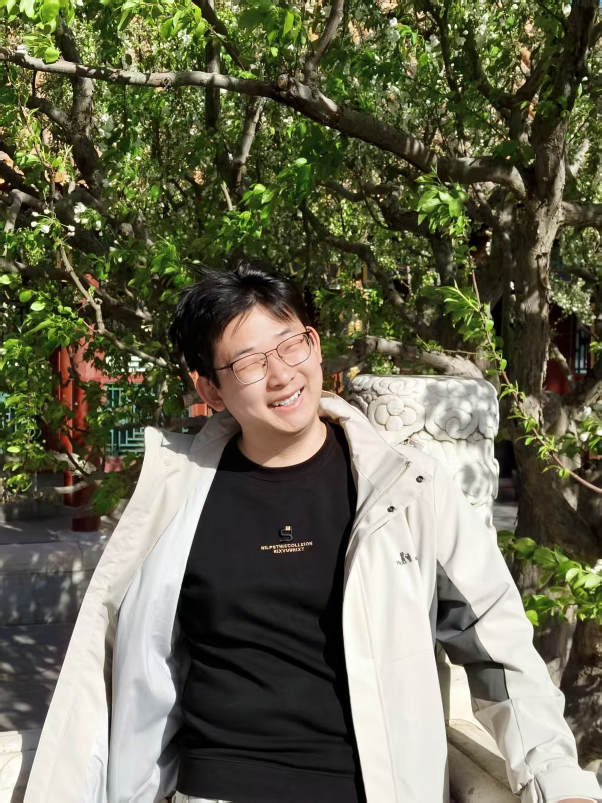
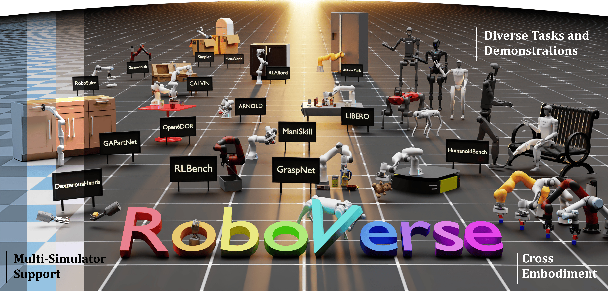
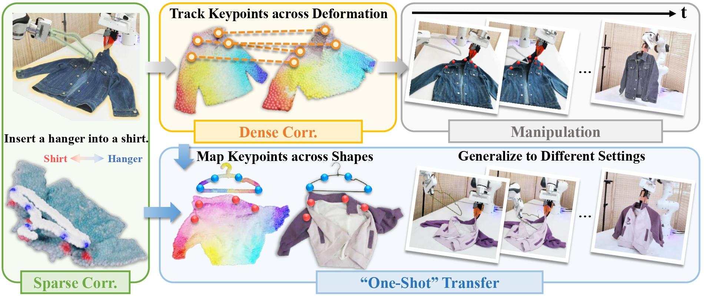

Acceptance
GarmentPile++ was accepted to ICRA 2026. Congratulations to Mingleyang Li!
In addition, four other papers were accepted to ICRA 2026. Congratulations to all collaborators!
Embodied AI · Robotic Manipulation · Computer Vision
王昱然Euren
I am an incoming Ph.D. candidate at the School of Computing, NUS, advised by Prof. Lin Shao. Prior to that, I spent a very enjoyable master’s time at Peking University under the supervision of Prof. Hao Dong and Dr. Ruihai Wu. Earlier, I studied at Chien-Shiung Wu College, Southeast University, where I was nominated for the Most Influential Graduate honor of Southeast University.

GarmentPile++ was accepted to ICRA 2026. Congratulations to Mingleyang Li!
In addition, four other papers were accepted to ICRA 2026. Congratulations to all collaborators!
DexGarmentLab was accepted as a Spotlight paper at NeurIPS 2025.
GarmentPile was accepted to CVPR 2025.
Master, Artificial Intelligence

Bachelor, Computer Science and Technology

Publications

ICRA 2026
Jiayuan Zhang, Ruihai Wu, Haojun Chen, Yuran Wang, Yifan Zhong, Ceyao Zhang, Yaodong Yang, Yuanpei Chen

ICRA 2026
Ziyu Zhu, Ruihai Wu, Yue Chen, Xirui Liang, Hojin Bae, Yuran Wang, Hao Dong

Experience
Organizer of the first simulation-driven competition on deformable object manipulation.
Challenge PageParticipated in a 14-day PBL course on system design and engineering thinking, with emphasis on product feasibility, user needs, and market characteristics.
Contact
I welcome conversations about embodied AI, robotic manipulation, simulation, and generalizable policy learning.